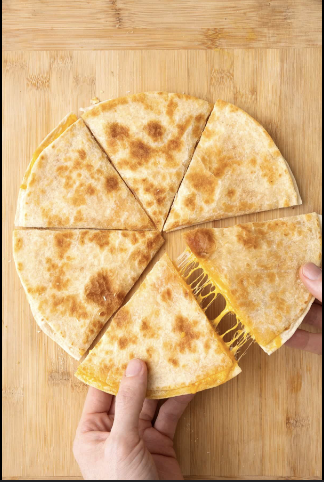

Cheese Quesadilla

Easy, Cheesy, Delicious Quesadilla
Ingredients
-
2 teaspoons unsalted butter
-
2 10-inch flour tortillas
-
1/2 cup shredded cheddar cheese
-
Guacamole (for serving)
Instructions
-
Heat the butter or olive oil in a large non-stick skillet over medium-high heat.
-
Add one tortilla to the pan and scatter the cheddar cheese in an even layer all over the tortilla. Place the second tortilla on top of the cheese.
-
Cook for 2-3 minutes or until the bottom of the tortilla starts to become golden brown. Carefully flip the tortilla and cook on the other side for 2-3 minutes or until the bottom of the tortilla becomes golden brown.
-
Remove the quesadilla from the pan and place on a cutting board. Use a knife or pizza cutter to cut the quesadilla into 6 triangles. Serve with guacamole or your favorite dipping sauce.